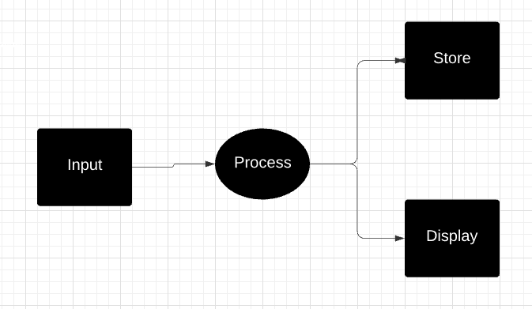
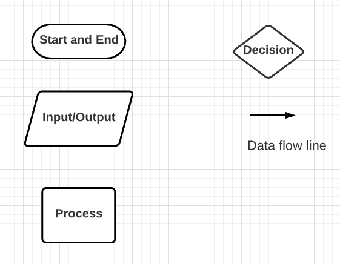
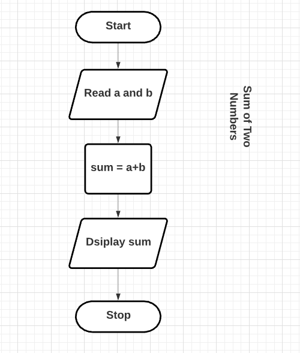
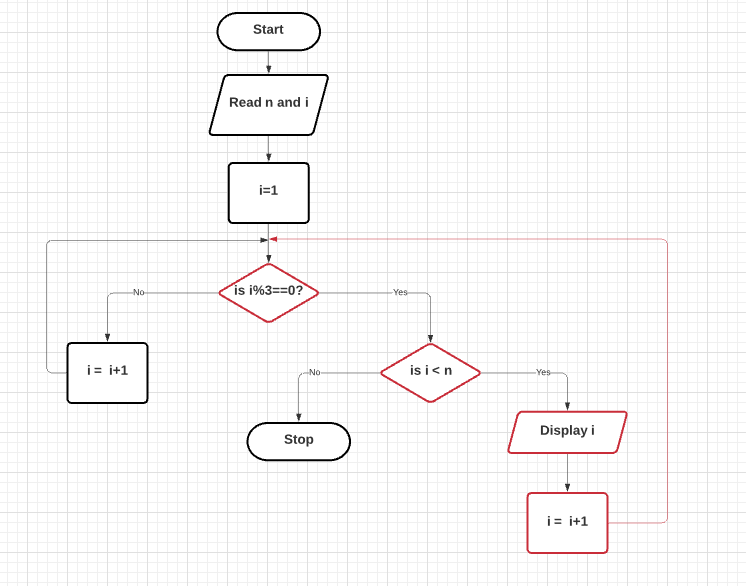
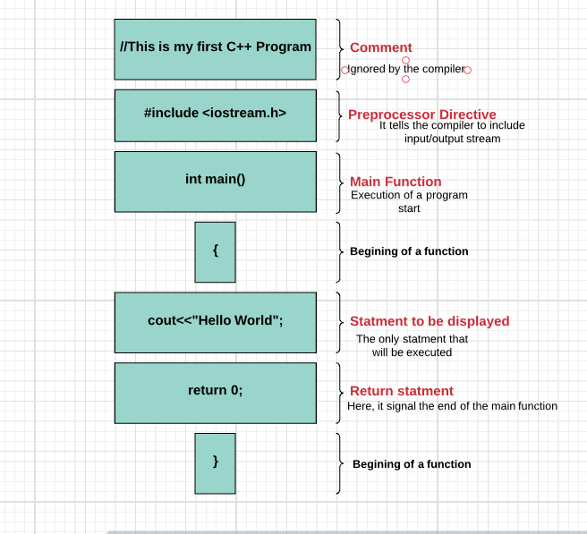
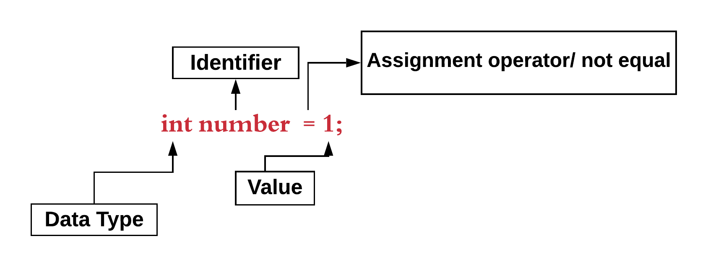

Computer: is an electronic device that can accept data as input, process the ented data in a predefined manner, and display output or store the processed data.
A computer is an electronic device or machine that performs arithmetic and logical operation at high speed.

Computer: is an electronic device or machine that performs arithmetic and logical operation at high speed.
Program: a sequence of instructions that determine the operation of the computer.
Programming:a process of writing a computer program.
Programming Language:consists of all rules and symbols that allow humans to communicate with computers.
Computer Programming:is the designing and implementation of a computer program.
Algorithm
A tool to solve a problem
Algorithm: is a finite sequence of instruction to solve a problem.
Properties of Algorithm
Finiteness: finite steps
Definiteness: defined set of instarction
Effectiveness: it accomplishes its intended result
Input: it needs input
Output: it displays its intended result
Types of Algorithms
Structured english:
Psydocode
Flowchart
1. Structured English
Example 1: Sum of two numbers
Step 1: Start
Step 2: Read number 1 & number 2
Step 3: Sum = number 1 + number 2
Step 4: Display sum
Step 5: Stop
Example 2: The Larger number between two numbers
Step 1: Start
Step 2: Read number 1 & number 2
Step 3: if number 1 > number 2
big = number 1
else
big= number 2
Step 4: Display big
Step 5: Stop
Example 3: Sum of n positive integer numbers
Step 1: Start
Step 2: Read N
Step 3: Sum = 0
Step 4: count = 0
Step 5: Read Number
Step 6: sum = sum + number
Step 7: count = count + 1
Step 8:if count < N then go to step 5
Step 9: Display sum
Step 10: Stop
Example 4: Find area of a triangle
Step 1: Start
Step 2: Read r
Step 3: calculate a = 3.14*r*r
Step 4: Display a
Step 5: Stop
2. Psydocode
Example 1: Multiple of two numbers
num1, num2, multi;
cin>>num1>>num2
multi= num1 * num2;
cout<< multi
3. Flowchart


Example 2: Display all the positive integers a multiple of three

Chapter One
Basic Structure of C++
C++ is the most popular programming language to develop applications and games. It is an object-oriented language.
To write code, we need an editor and compiler. We can edit and compile our c++
code using visual studio code(my favorite editor). Though, there is a lot of c++ IDE (Integrated Development Environment) out there.
To explore more, click here.
Example:C++ Program

Comment: This is for human and it is completly ignored by the compilor.
Two types of comments
1. Single line comment (//for single line)
2. Multiple line comment (/* for multiple lines */)
Preprocessor Directive (library): it tells the compilor to include input and output.
Two types
1. cin - input
2. cout -output
Function: a block of code to accomplish a task.
function a() { do some thing; return value; }
Hello world
To get started with writing C++, open the visual studeo code or any kind of IDE of your choice and write your
first "Hello world" c++ code:
#incude< iostream.h > int main() { cout<<"Hello World"; return 0 }
Save the program with .cpp extension
Open the terminal by using the following shortcut
ctrl + shift + `
To run the code, use the following bash command
g++ -std=c++11 your_file.cpp -o your_program Variables
A variable is a container or portion of memory for storing and retrieving data value. A variable in c++ is a memory address. It is a digital container to hold a value.
This value may be integer number, floating-point number, character, string, or boolean.
Datatype: determine the type of data will be stored in a avriable.
Types of datatypes
Int - for integer
Char - for character
Float - for decimal numbers
Double- for floating-point number
Bool - for boolean (true/false)
Identifier: is the name of a variable. It is a sequence of one or more letters, digits, and underscore characters.
An identifier can not start with numbers and it can not be keywords.
Keyword: are special words that are assigned for certain tasks. They can be declared as variables.
Example
New
return
if
else
public
continue
Declaring variables
Here is the simplest way to declare a variable.

We can declare a variable and assigne a value. For example, float x; x = 1.25; These two lines of
code create a memory location called x for a decimal number and stores a value of 1.25.
We can declare a variable With the keyword auto. For example,auto y = 13. The compiler decides the data type
during the execution of the program.
auto a = 112; //integer auto b = 12.5 //double auto c = true; //boolean auto d = "hello"; //string
Example: Multiple of two numbers
#incude < iostream.h > int main() { int num1 = 5; int num2 = 6; cout << "Multiple: "<< num1*num2; return 0; }
Signed and Undigned Variable: used to explicitly tell the compilor to declare negative or positive value. By defaut, a variable is positive.
signed int number = 5;Constants
Variable diclared as constant can not be changed after declared. We ned to assign a value during declaration.
const PI = 3.14;Example: Area of a circle
#icndue < iostream.h > void main() { float r; const float PI = 3.1415; float Area; cout<<"Enter radius of a circle"<< endl; cin>>r; Area = PI*r*r cout<<"The area is " << Area<< endl; }
A constant cannot change value through assignment or be re-declared
while the code is running. It has to be initialized to a value.
Operators
Symbols that is used to perform specific operations. Types of Operator:
Arithmetic Operator
Relational Operator
Logical Operator
Assignment Operator
Conditional Operator
Increment/Decrement Operator
Bitwise Operator
1. Arithmetic Operator
There are five arithmetic symbols. Those are +, -, *, /, % (modulus).
+ and - have equal precedence.
*, /, and % have equal precedence.
When they have equal precedence, c++ works from left to right.
<(less than), <=(less than or equal to), =(Assignment Operator), ==(Equality Operator), !=(not equal)
Example
a = 2, b = 3, and c = 6 ( a == 5 ) // evaluates as flase (a * b >=c ) evaluates as true ( b + 4 > a*c) evaluates as false ((b = 2) ==a) evaluates as true
3. Logical Operator
Logical and (&&)
Logical or (||)
Logical not (!)
Example
p
q
p && q
p || q
!P
T
T
T
T
F
T
F
F
T
F
F
T
F
T
T
F
F
F
F
T
4. Assignment Operator There are three ways of using an assignment operator.
Simple assignment:
int a =5;
Multiple assignment:
double b = c = d = s =10;
Compound assignment:
float a = 6.8, b = 23.4; a = a +1; is the same as a+=1 b = b-2; is the same as b -=2;
Example 1:
#include < iostream.h > void main() { int a, b; a = 4; b =3; a = b; b = 7; cout<< "a: " << a << endl; cout <<"b: "<< b << endl; }
Example 2:
#include < iostream.h > void main() { int a, b; b = 4; a = b; a += 7; cout<< "a: " << a << endl; }
5. Conditional Operator
It evaluates the first statement if a condition turns out to be true.
Syntax: condition? expression1: expression2;
If the condition is true expression1 will be executed. If not, expression2 will be excuted.
Example
#include < iostream.h > void main() { int a, b, c; a = 2; b = 4; c = a>b? a: b; cout<< "c: " << c << endl; }
6. Increment/Decrement Operator
Increment: adding 1 to a variable.
Decrement: subtract 1 from a variable.
Only works on integer variable
Prefix Increment/Decrement
Increment or decrement the variable before it is used by other operation.
Example
int a = 7, c =8; int b = ++a; //b =8 and a =8 int d = --c; //d = 7 and c = 7
Postfix Increment/Decrement
Increment or decrement the variable after it is used by other operation.
Example
int a = 7, c =8; int b = a++; //b =7 and a =8 int d = c--; //d = 8 and c = 7
Note: If we use the variable separatly both postfix and prefix increment and decrement are the same
Example 1
int a = 7, c =8, d; a++; a =8 c--; //c = 7; d = a + c; // d is 15
Example 1
int a = 10, b =5, c; c = a % b++; //c = 0 c = a % ++b; //c = 4 c = ++ a - b--; //c =6
Library functions
iostream.h: input and output
math.h: mathematics
string.h: used to include line of words
time.h: used to display time and date
Precedence of different operations
Example
#incude < iostream.h > int main() { int a = 5, b = 3, c = 1, d = 8 , e = 7, f =10, g =5, s, m; s = a + b%(c+d)/e%b; cout << "s: "<< s; m = b*e + f%(g-d)%d; cout<< m; return 0; }
Tempreture change from fahrenheit to celsius
Six data types that are primitives:
#incude < iostream.h > void main() { float c, f; Enter a fahrenheit tempreture"; cin>>f; c = (5.0/9)*(f-32); cout<< "celsius" << c; }
Conditional StructureBenefits:
Provide option
Make flexible
Make branch
Form loop
Grouped in to four
Conditional Statment: if, if--else, nested--if
Looping and iterative statement: for loop, while, do-while loop
Control or Jumping Statment: goto, continue, break, exit
Selective and Branching statment: switch
1. Conditional Statment
Make decision
A block of code will be executed if the condition is true